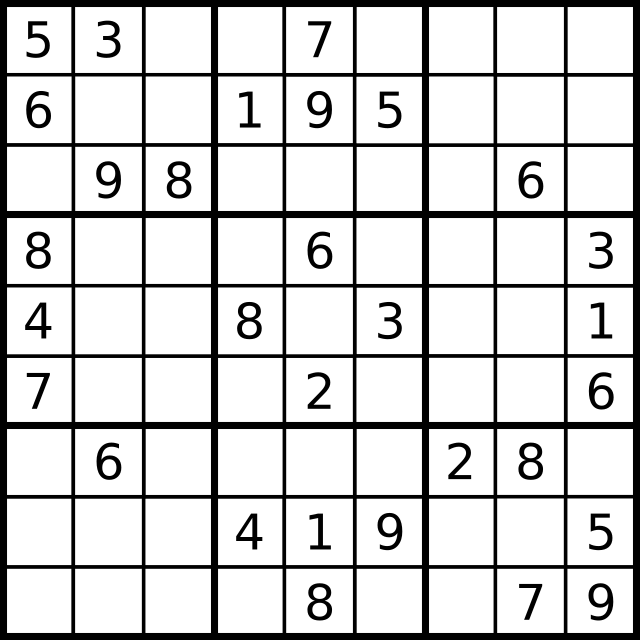
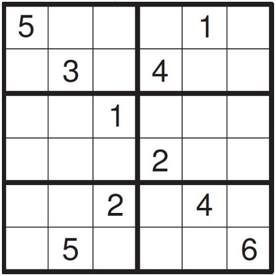
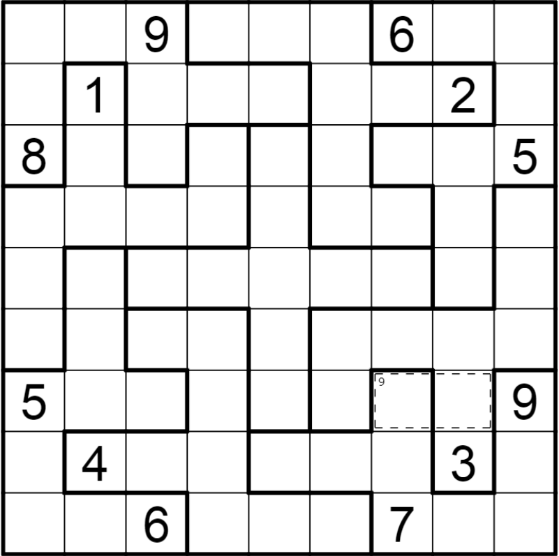
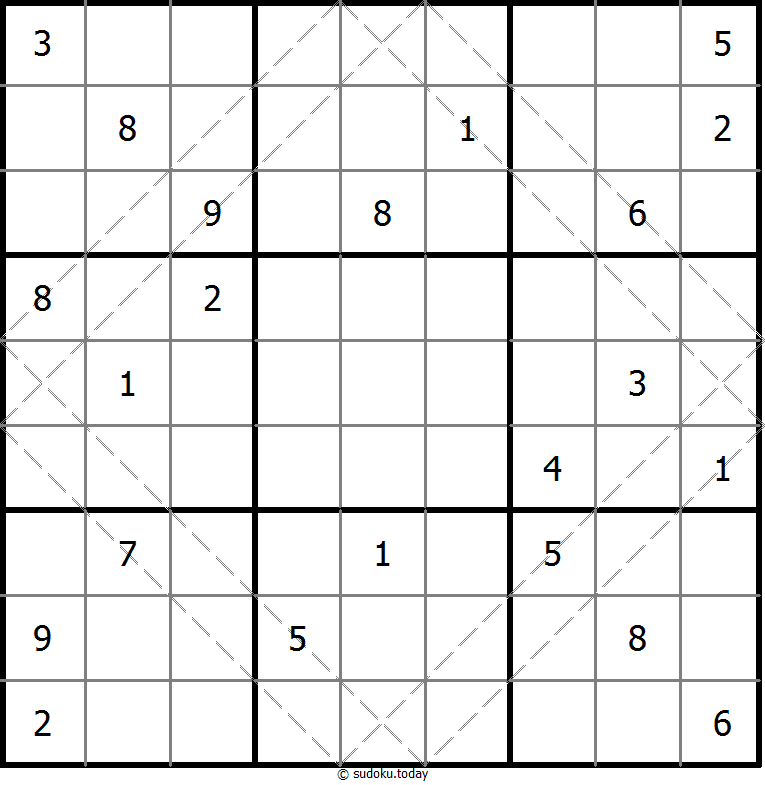
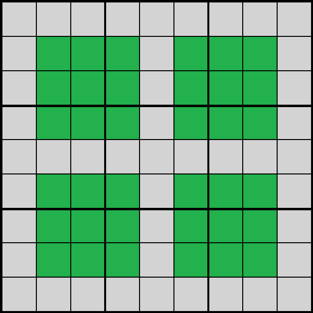

Sudoku je populární logická hra, která vyzývá hráče všech věkových kategorií svým mřížkovým formátem. Hra se skládá z mřížky o velikosti 9x9, která je dále rozdělena na devět menších 3x3 mřížek.
Sudoku is a popular puzzle game that challenges players of all ages with its grid format. The game consists of a 9x9 grid, which is further divided into nine smaller 3x3 grids.

Cílem Sudoku je jednoduchý, avšak zábavný: vyplnit prázdné buňky mřížky čísly od 1 do 9 tak, aby každý řádek, každý sloupec a každá 3x3 podmřížka (nebo "box") obsahovala všechna čísla od 1 do 9 bez opakování. Tato požadavky přidávají hře vrstvy složitosti, jelikož hráči musí strategicky přemýšlet a logicky uvažovat, aby řešili puzzle správně.
The goal of Sudoku is simple but fun: fill the empty cells of the grid with numbers from 1 to 9 so that each row, each column, and each 3x3 subgrid (or "box") contains all the numbers from 1 to 9 without repetition. These requirements add layers of complexity to the game, as players must think strategically and reason logically to solve the puzzles correctly.
Existuje mnoho různých druhů Sudoku, které nabízejí variace na základní pravidla této hry. Klasické Sudoku je základní forma, kde hráči vyplňují 9x9 mřížku čísly od 1 do 9 tak, aby každé číslo figurovalo jednou v každém řádku, sloupci a 3x3 podmřížce.
There are many different kinds of Sudoku that offer variations on the basic rules of this game. Classic Sudoku is a basic form where players fill a 9x9 grid with numbers from 1 to 9 so that each number appears once in each row, column and 3x3 sub-grid.
Mini Sudoku je zmenšená verze s mřížkou například 6x6 a omezením čísel na rozsah 1-6.
Mini Sudoku is a scaled-down version with a grid of, for example, 6x6 and limiting the numbers to a range of 1-6.

Irregulární Sudoku má stejná pravidla, ale mřížka nemá pravidelné 3x3 podmřížky.
Irregular Sudoku has the same rules, but the grid does not have regular 3x3 subgrids.

Diagonální Sudoku obsahuje dodatečnou podmínku, že hlavní diagonály musí obsahovat čísla od 1 do 9.
Diagonal Sudoku contains an additional condition that the main diagonals must contain numbers from 1 to 9.

Hyper Sudoku rozšiřuje klasické Sudoku dalšími submřížkami ve tvaru 3x3.
Hyper Sudoku expands classic Sudoku with additional 3x3 subgrids.

Samurai Sudoku spojuje více klasických Sudoku do jednoho velkého puzzle.
Samurai Sudoku combines several classic Sudoku into one big puzzle.
Tyto různé druhy Sudoku poskytují hráčům různé výzvy a varianty, což udržuje hru zajímavou a rozmanitou pro ty, kteří se rádi věnují této logické hádance.
These different types of Sudoku provide players with different challenges and variations, which keeps the game interesting and varied for those who enjoy this logic puzzle.
Přitažlivost Sudoku sahá dál než pouhá zábava; mnoho lidí ji považuje za prospěšné cvičení pro mysl. Pravidelné hraní Sudoku může zlepšit kritické myšlení, koncentraci a schopnost řešení problémů. Strukturovaný formát hádanky podporuje systematické myšlení a rozvoj logického úsudku, což může mít pozitivní vliv na kognitivní funkci.
The appeal of Sudoku goes beyond mere entertainment; many people find it a beneficial exercise for the mind. Playing Sudoku regularly can improve critical thinking, concentration and problem-solving skills. The structured format of the puzzle encourages systematic thinking and the development of logical judgment, which can have a positive effect on cognitive function.